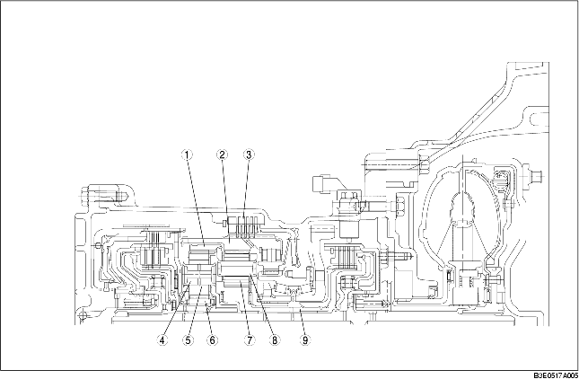

• Das vordere Planetengetriebe und der Außenlaufring des Freilaufs sind integriert und mit der Innenlamellenscheibe der 1./Rückwärtsgangbremse verbunden.
Daher drehen sich auch der Außenlaufring des Freilaufs und die Innenlamellenscheibe der 1./Rückwärtsgangbremse mit, wenn sich das vordere Planetengetriebe dreht.
• Das vordere Sonnenrad ist in die vorderen Ritzelscheiben eingebaut und das vordere Hohlrad außerhalb der vorderen Ritzelscheiben. Das vordere Sonnenrad ist mit der Vorwärtskupplungsnabe und das vordere Hohlrad mit dem hinteren Planetenträger verbunden.
• Beim hinteren Planetengetriebe und der hinteren Ritzelscheibe befindet sich das hintere Sonnenrad innen und das hintere Hohlrad außen. Das hintere Sonnenrad ist über die 2-4 Bremstrommel mit der Turbinenwelle verbunden, während das hintere Hohlrad über den vorderen Planetenträger mit dem Primärzahnrad verbunden ist.

.